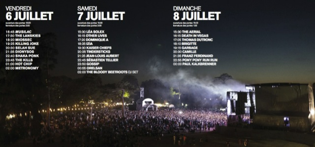

Normandie - Une terre de culture
Normandie - Une terre de cultureIntroduction
Le festival Jazz sous les pommiers a lieu tous les ans à Coutances (Manche). Il a été conçu à la suite d'une rencontre entre deux amateurs locaux, Thierry Giard, enseignant, et Gérard Houssin, animateur culturel. La première édition a eu lieu en 1982. Le festival se tient traditionnellement pendant la semaine de l'Ascension. La programmation très éclectique va du jazz « New Orleans » à la musique électronique. Elle inclut également de nombreux spectacles de rue. Les artistes invités sont aussi bien des musiciens locaux que de grandes vedettes internationales. En 2006, Jazz sous les pommiers totalisait plus de 1 000 concerts qui ont été suivis par 500 000 spectateurs, dont 350 000 payants. En 2010 le festival a connu un record de fréquentation avec 37 000 spectateurs. Le festival fête sa 30e édition en 2011, invitant des artistes qui sont déjà venus jouer au festival mais également des inédits à Coutances. Cet anniversaire s'est terminé avec la « Folle Parade », une déambulation de 2 h 30 dans le centre ville de Coutances le 4 juin.
"Staff"
L’équipe du festival Jazz sous les pommiers est le fruit d’un travail associant l’équipe permanente du Théâtre municipal de Coutances et une vingtaine de bénévoles. Ce comité d’organisation travaille à longueur d’année par le biais de réunions plénières ou de commissions spécialisées : programmation, promotion, bars, spectacles de rue etc … Tous les aspects du festival sont traités de cette manière et dans la plus grande démocratie. C’est un vrai collectif qui dessine chaque année le visage du festival. L’équipe des permanents du festival et du théâtre Stéphanie Davenel, Marie-Christine Delozier, Fabrice Fourneaux, Isabelle Hébert, Séverine Hédouin, Denis Le Bas, William Lecaplain, Corinne Leconte, Jean-Paul Lecoutour, Dominique Lépinasse, Gérard Marie, Julie Mesnil, Véronique Robine, Alain Tirel, Béatrice Touchais, Valérie Yhuello. Le comité de bénévoles Jean-Pierre Arnaud, Monika Arnaud, Yann Breuilly, Michel Caens, Gérard Collet, Jean-Philippe Coulombier, Jacques Drapier, Clara Horel, Josette Leduc, Monette Lepleux, Patrick Leroy, Michèle Mercier, Jean-Marie Robillard, Catherine Savary, Nadia Abadou-Dessolier, Benoît Groud, Guy Harel, Régis Mouchel, Michel Le Gal, Martin Daguerre, Alexia Gémin, Vincent Brieuc.


Edition 2010